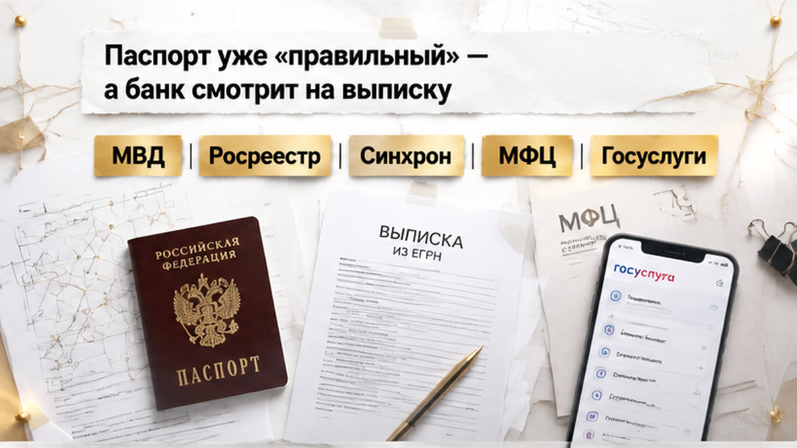
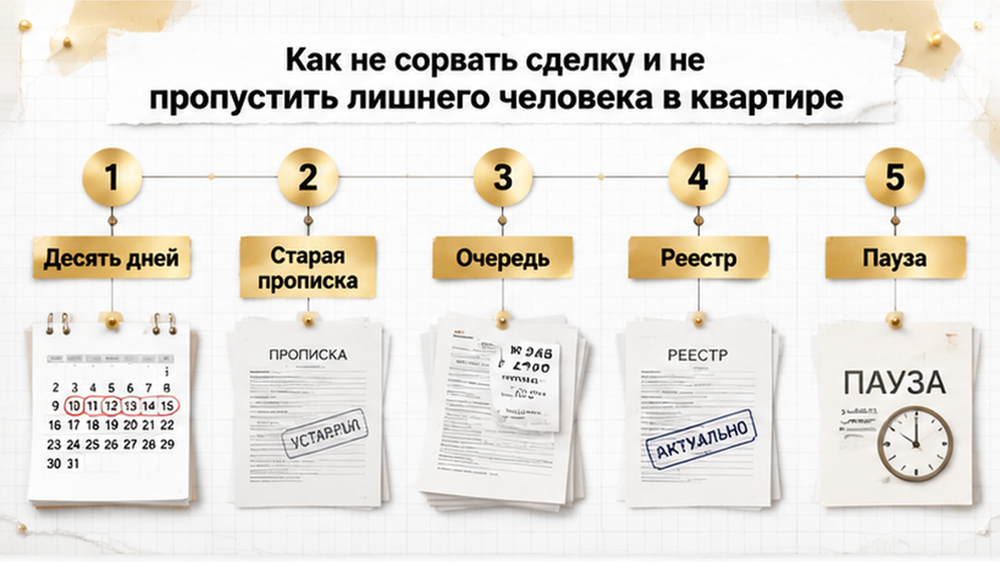

Сделка на тюменской вторичке встала на десять дней: продавец положил на стол паспорт со свежим штампом прописки, а выписка из ЕГРН, которую банк заказал в тот же день, показывала старые данные — и ипотека на 5,8 млн рублей повисла в воздухе. Двушка, покупатели — молодая пара с одобренной ипотекой, аванс 100 тысяч уже у продавца под распиской. Мы сидели в переговорке, кредитный специалист пролистал документы, отодвинул выписку и сказал: «Данные не совпадают. На сделку не выпущу, пока Росреестр не обновит». Продавец покраснел и начал доказывать, что паспорт настоящий, вот же он. Покупательница посмотрела на мужа, потом на меня: нас обманывают или это просто бумажки?
Я Святослав Шакин, The Риэлтор, Тюмень. Разбираю вторичку до аванса, а не после перевода денег. Смотреть разборы и задать вопрос можно в Telegram и MAX.

История у продавца была самая обычная. Летом он переехал к жене в дом за городом, выписался из квартиры и прописался по новому адресу. Для покупателей это даже плюс: собственник съехал, квартира освобождается. Штампу в паспорте было две недели, и продавец искренне не понимал, при чём тут банк, если документ у него на руках и он настоящий.
А банк смотрит не на паспорт, а на запись в ЕГРН. По ней регистрируют переход права и залог, по ней служба безопасности проверяет, что квартиру продаёт тот самый человек, который ею владеет. Если данные собственника в паспорте и в выписке расходятся, кредитный специалист не станет гадать, ошибка это или подмена. Он ставит сделку на паузу, потому что отвечает за деньги банка, а не за сроки продавца.
С этой логикой я уже сталкивался, только с другой стороны. Однажды продавец показал справку о закрытии ипотеки, а банк всё ещё держал залог. На руках правильная бумага, а в реестре старая картина. Механика та же: для сделки решает то, что записано в ЕГРН, а всё остальное — просто объяснения.
В первый же день продавец предложил «решить по-быстрому»: уйти в другой банк или подписать договор сейчас, а выписку обновить потом. Покупатели к тому времени уже предупредили хозяйку съёмной квартиры, что съезжают, и планировали переезд на конец месяца. Нервничать было из-за чего обеим сторонам, и уступать первым никто не хотел. Я попросил всех ничего не подписывать и не переигрывать, пока не поймём, что именно не совпадает и сколько это будет обновляться.
К вечеру разобрались. Никакого мошенничества: в реестр просто ещё не дошли новые данные собственника. Продавец так и говорил — «у меня в ЕГРН старая прописка». Сведения из МВД в Росреестр передаются, но не в ту минуту, когда в паспорт ставят штамп. Покупателям я объяснил на пальцах: паспорт — это новость, а выписка — газета, которая ещё не вышла из типографии. Продавцу сказал прямо: другой банк время не сэкономит, любой нормальный банк закажет ту же выписку и увидит то же самое.
В эти же дни всплыла вещь, которую многие путают. ЕГРН не показывает, кто прописан в квартире. Покупатели часто думают, что «свежая выписка» закрывает тему прописки, а на деле это только собственник и обременения. В выписке есть собственник, его права и обременения, а списка жильцов там нет. Значит, даже самая свежая выписка не скажет покупателю, остался ли кто-то зарегистрированным по этому адресу. Это отдельная бумага, и к ней мы ещё вернёмся.
Со стороны кажется, что у государства одна база: поменял прописку, и всё обновилось везде. На деле это два разных ведомства. МВД отвечает за паспорт и регистрацию по месту жительства, а Росреестр ведёт квартиры и их владельцев. Данные между ними ходят электронно, но это очередь с проверками, а не кнопка «синхронизировать». У нашего продавца эта очередь заняла десять дней.
Ждать молча необязательно. Собственник может сам подать заявление об обновлении своих данных в ЕГРН через МФЦ или Госуслуги и не ждать, пока сведения дойдут по цепочке. Мы в тот кейс как раз так и сделали: зафиксировали дату подачи и перенесли подписание, не давая никому «дожать» аванс. Мгновенно от этого не станет, но у сторон появится понятная точка отсчёта вместо «когда-нибудь обновится». Если продавец недавно менял паспорт, фамилию или прописку, свежую выписку лучше заказать заранее и спокойно сверить с паспортом. Так вы узнаете о расхождении дома, а не в кабинете у кредитного специалиста.
Первым нервничает не продавец и не покупатель, а банк. Одобрение у пары живое, деньги есть, дата стоит в календаре, а кредитный специалист пишет короткое «ждём актуальные сведения». Какой штамп стоит в паспорте, ему неважно. Пока данные собственника в выписке не совпадают с документом, квартира для банка стоит на паузе. Тот же рефлекс я видел, когда продавец принёс справку о закрытии кредита, а залог в реестре ещё висел. Громкие объяснения сделку не ускоряют, её ускоряет только запас по датам.
Дальше нервы идут по цепочке. Продавец обижается: «Я всё сделал, что вам ещё надо?» У него встречная покупка, свой банк и свои сроки. Покупатели уже отдали уведомление о расторжении аренды. А десять дней на вторичке тянутся бесконечно: у продавца может объявиться покупатель «за наличку», у покупателя может истечь одобрение или поменяться ставка.
Самое опасное в такой паузе — желание «додавить». Продавец предлагает подписать сейчас, а выписка, мол, догонит. Покупатель на эмоциях готов доплатить сверху аванса, лишь бы квартиру не увели. Так обычно и теряют деньги: из-за бумажной задержки торопятся, а проверку бросают на полпути. Мы в тот раз держали линию: ни доплат, ни подписи «на честном слове», пока банк не увидит одни и те же фамилии в паспорте и в выписке.
Такие разборы до аванса я выкладываю в Telegram и MAX: паспорт, выписка ЕГРН и что банк увидит в день сделки.

Сделку мы не сорвали. Через десять дней выписка догнала паспорт, банк снял паузу, и пара вышла на подписание с той же квартирой и тем же одобрением. Сверх аванса покупатели не отдали ни рубля, хотя соблазн «закрепить квартиру» ещё одной суммой был у всех за столом. Сто тысяч под распиской так и остались единственными деньгами, которые ушли до регистрации.
Паузу мы не просто пересидели. Свежий штамп говорит только о самом продавце. Про взрослого сына, бывшую жену или брата, который «давно живёт на северах», он ничего не скажет. Поэтому я смотрю не на штамп, а на полный список тех, кто зарегистрирован или был зарегистрирован в квартире. Особенно внимательно смотрю на тех, кого выписали временно: ушёл в армию, надолго уехал, отбывает срок. И на детей, которых выписали без нового адреса. С такими вопросами потом приходит опека, и разбираться с ней приходится уже новому собственнику. На кухне об этом не расскажут, это видно только в истории регистрации.
Договорённость о сроках я всегда переношу на бумагу. В соглашении об авансе прописываем дату, до которой продавец снимается с учёта, свежие сведения о зарегистрированных к сделке и полный возврат аванса, если в квартире найдётся кто-то ещё. Тогда десять дней остаются просто ожиданием и не превращаются в спор о том, кто кому должен.
Вопрос к вам. Одобрение горит, продавец торопит, паспорт уже новый, а выписка ещё старая. Вы бы ждали десять дней или подписали сейчас, а бумаги пусть догоняют?
Если у продавца недавно менялись паспорт, фамилия или прописка, я до перевода денег сверяю несколько вещей. Первое: данные паспорта и свежую выписку ЕГРН, ту самую, которую банк увидит в день сделки. Второе: справку о зарегистрированных на дату, близкую к сделке, а не ту, что продавец «брал весной». Третье: кто был прописан в квартире раньше. Если продавец говорит, что ипотеку закрыл, прошу выписку без отметки о залоге, справки из банка мало. Аванс держу минимальным и по возможности провожу через безопасный расчёт, а не отдаю наличными в руки.
На тюменской вторичке такие «бумажные» паузы часто идут рядом с другими сюрпризами — и чем дороже квартира, тем меньше у сторон запас прочности по нервам и срокам одобрения. Коллеги недавно разбирали, как после наследства квартиру подарили за три дня и выставили за 25 млн. А вот история, где аванс внесли, а продавец показал рейтинг 800 и спрятал бюро, напоминает: красивая бумага не заменяет полную проверку.
Эта пара закрыла сделку, а не открыла судебный спор, потому что узнала о расхождении до денег, а не после. Свежий паспорт у продавца не повод отказываться от квартиры. Это повод сначала сверить бумаги, дождаться актуальной выписки и только потом нести деньги. Если сомневаетесь в своей сделке, пришлите документы до аванса — разберём вместе, пока банк не поставил вас в угол.